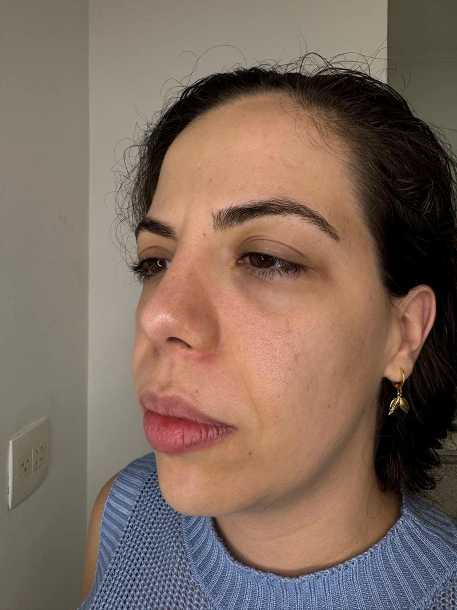
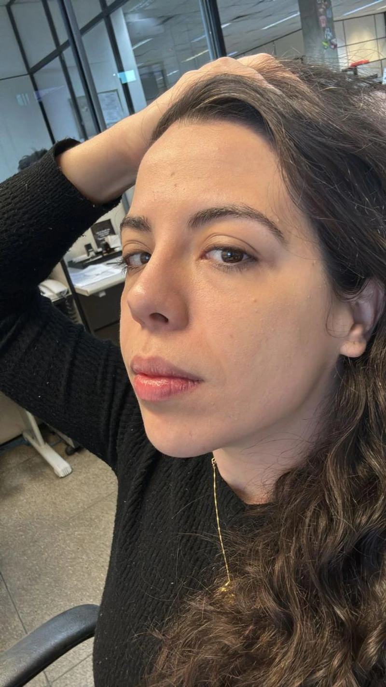
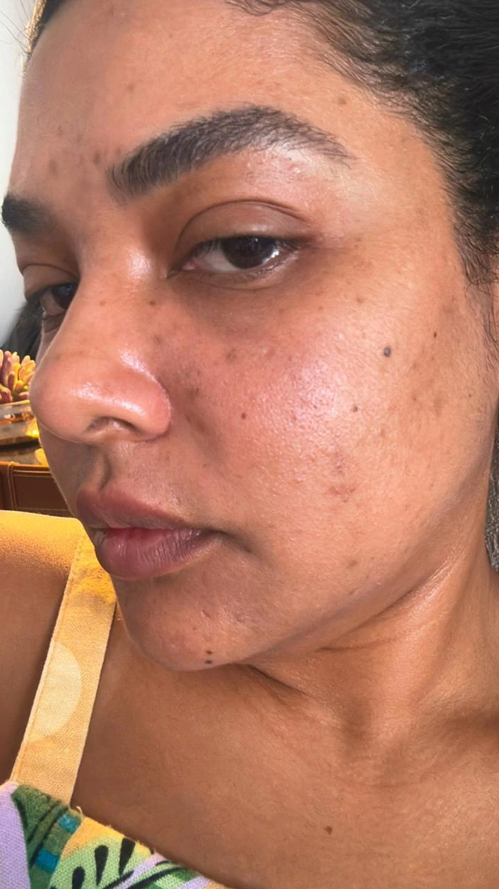
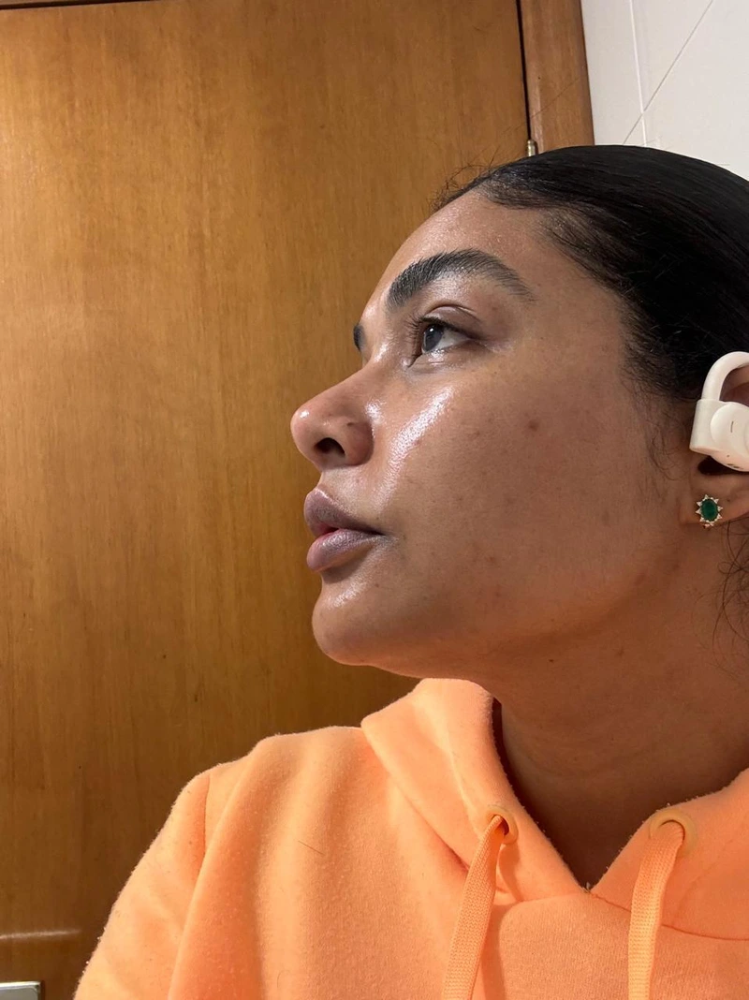
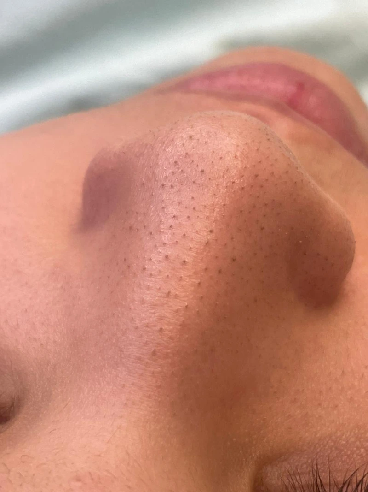
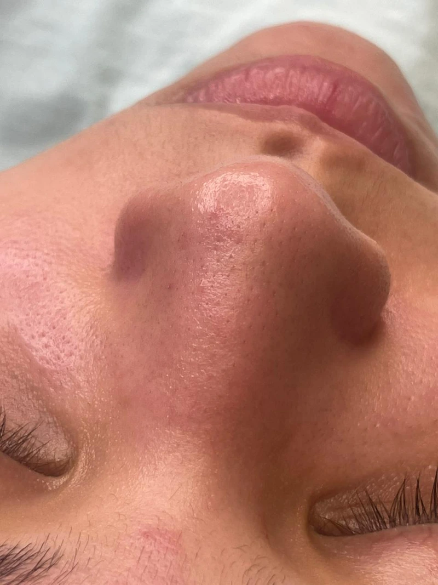
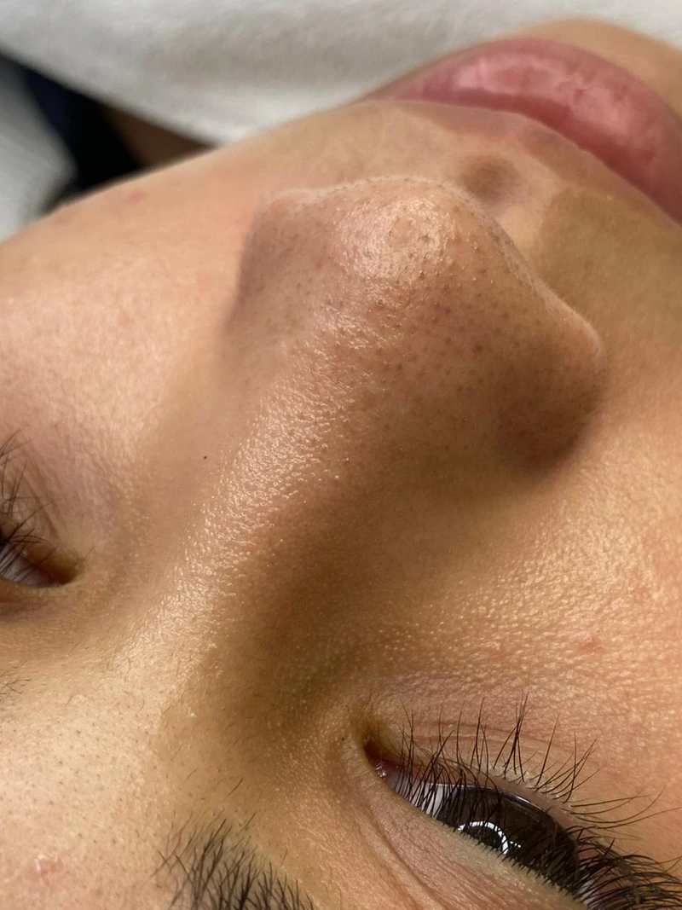
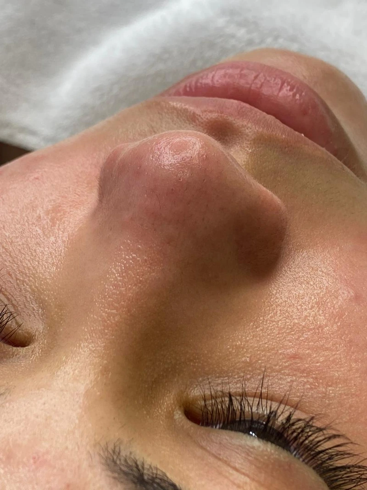

Chega de cravos, acne e oleosidade que voltam toda semana. Com o protocolo certo e uma profissional especializada, sua pele finalmente respira e você volta a se sentir bonito(a) de verdade.
Sou Juliana, enfermeira esteta desde 2016, com mais de 17 cursos especializados, todos voltados para estética facial e tecnologia de ponta. Ao longo dos anos me especializei em limpeza de pele estratégica, tratamento de manchas, rejuvenescimento antiaging e no Protocolo Zero Acne, do qual sou embaixadora oficial.
Aqui em Santos, já transformei a pele de centenas de pacientes que tentaram de tudo e não viram resultado. Porque eu não faço limpeza de pele igual a qualquer clínica. Eu faço um protocolo personalizado, pensado para a sua pele, não pra pele de todo mundo.
Não é a limpeza básica que você conhece. É muito mais.
A limpeza de pele convencional remove o que está na superfície. A Limpeza Estratégica vai fundo — eliminando cravos, controlando oleosidade, tratando ativamente a acne e prevenindo manchas antes que elas apareçam.
O processo segue etapas precisas:
Procedimentos Avançados
Renovação profunda e estímulo de colágeno
Tratamento de alta tecnologia indicado para renovação intensa da pele, estímulo de colágeno e melhora da textura. Age em camadas profundas para resultados expressivos com segurança e controle clínico.
Clareamento, viço e uniformização
Protocolos a laser indicados para clarear manchas, uniformizar o tom da pele e devolver luminosidade. Resultados visíveis desde as primeiras sessões, com procedimento rápido e sem tempo de recuperação.
Colágeno, textura e cicatrizes
Técnica minimamente invasiva que estimula a produção natural de colágeno. Indicada para tratar cicatrizes de acne, melhorar a textura da pele e promover rejuvenescimento com resultado progressivo e natural.
Correção com segurança e precisão
Remoção segura e eficaz de micropigmentação antiga ou mal executada. Protocolo individualizado que respeita o tipo de pele e o pigmento utilizado, garantindo um processo controlado e sem danos à pele.
Resultados da limpeza de pele








Para você que já está cansada
Você acorda, vai pro banheiro e antes mesmo do dia começar… já começa o peso. O cravo que apareceu do nada. A espinha que doeu ontem e hoje tá pior. A oleosidade que nenhum produto controla.
E aí vem aquele pensamento que você já não aguenta mais ter: "Minha pele nunca vai melhorar."
Você já tentou tanto. Gastou dinheiro com produto que prometia tudo e entregou nada. Ouviu "bebe mais água", "não come gordura", "é coisa da sua cabeça". Foi em profissional que fez uma limpeza básica e sua pele saiu vermelha, com a pele irritada, sem resultado nenhum.
E a pior parte não é nem a pele em si.
É cancelar o compromisso porque tá num dia ruim de pele. É tirar foto e já saber que vai se arrepender. É evitar encontrar pessoas sem maquiagem. É se sentir menos — menos bonito(a), menos confiante, menos presente.
Você merece mais do que isso.
A limpeza de pele estratégica não é um procedimento estético qualquer. É um recomeço. É sua pele respirando depois de tanto tempo sufocada por produtos errados e orientações genéricas.
Dúvidas Frequentes
A frequência ideal varia de acordo com cada tipo de pele e necessidade. Em geral, recomenda-se a cada 30 a 45 dias para manutenção. Na avaliação personalizada, defino o intervalo ideal para o seu caso.
Após o procedimento, você receberá orientações personalizadas com os produtos e cuidados ideais para o seu tipo de pele, incluindo proteção solar e ativos específicos para manter os resultados.
Onde Estamos
Juliana atende em duas unidades na Baixada Santista — em Santos e em Praia Grande. Escolha a unidade mais próxima de você e agende sua avaliação.
Dê o primeiro passo
Agende agora sua avaliação personalizada e descubra o que a limpeza de pele estratégica pode fazer por você.